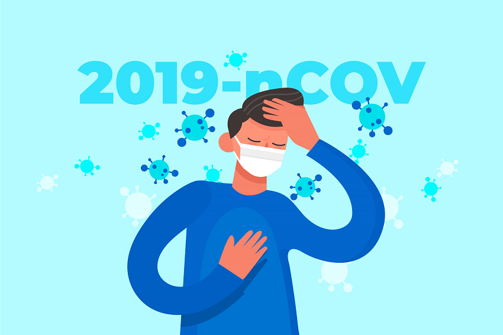
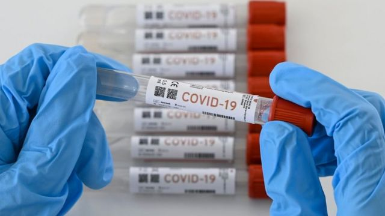
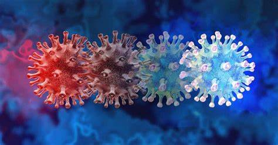

SINTOMAS
Algunas personas pueden no tener síntomas o tener algunos, pero no todos los síntomas.
Los síntomas pueden desarrollarse dentro de los 2 a 14 días posteriores a la exposición al virus. Los síntomas más graves que requieren buscar ayuda médica de inmediato incluyen:
- Problemas para respirar
- Dolor o presión en el pecho que persiste
- Confusión
- Incapacidad para despertarse

PRUEBAS
Se pueden usar dos tipos de pruebas virales: las pruebas de amplificación de ácido nucleico (NAAT, por sus siglas en inglés) o las pruebas de antígenos. Una prueba de anticuerpos (también conocida como serología) puede indicar si tuvo la infección en el pasado.

VARIANTES
Actualmente hay cuatro variantes:
-La variante alfa (también conocida como variante Kent o B.1.1.7) que se descubrió por primera vez en el sureste de Inglaterra en septiembre de 2020.
-La variante beta (también conocida como variante sudafricana o B.1.351).
-La variante gamma (también conocida como variante brasileña o P.2).
-La variante delta (también conocida como variante india o P.1).

PREVENCIÓN
Para evitar la propagación de la COVID‑19, sigue estas recomendaciones:
1.Mantén una distancia de seguridad con otras personas (de 1 metro como mínimo), aunque no parezca que estén enfermas.
2.Utiliza mascarilla en público, especialmente en interiores o cuando no sea posible mantener el distanciamiento físico.
3.Prioriza los espacios abiertos y con buena ventilación en lugar de los espacios cerrados. Si estás en interiores, abre una ventana.
4.Lávate las manos con frecuencia. Usa agua y jabón o un desinfectante de manos a base de alcohol.
5.Cuando tosas o estornudes, cúbrete la nariz y la boca con el codo flexionado o con un pañuelo.
6.Vacúnate cuando sea tu turno. Sigue las directrices sobre vacunación de las autoridades locales.
Si no te encuentras bien, quédate en casa.